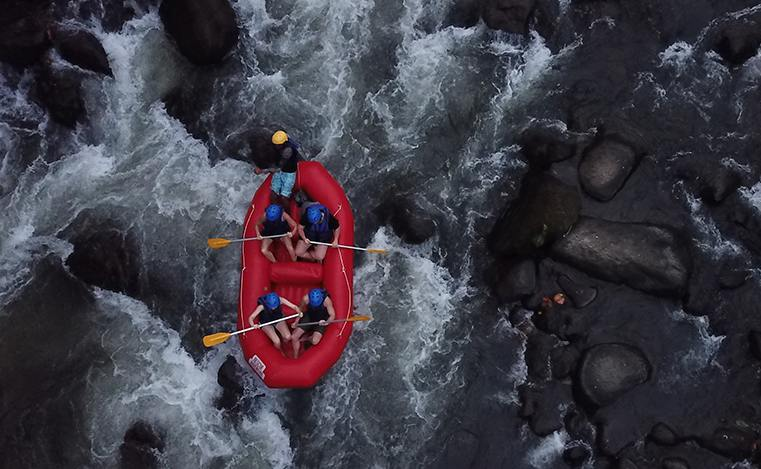
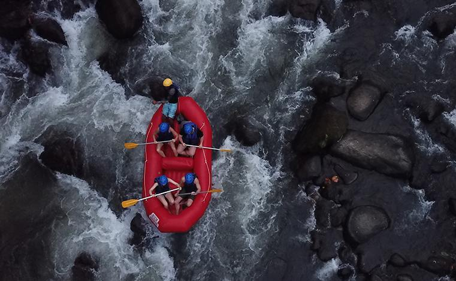

At Tini Waterfall Adventure, our purpose is to create unforgettable outdoor experiences that connect people with nature. Our mission is to provide safe, thrilling, and educational rafting trips for all ages and skill levels. We believe in respect—for our guests, our team, and the rivers we navigate. Our creed is built on adventure, integrity, and stewardship of the environment. Our motto: "Paddle with purpose, flow with nature."
 
